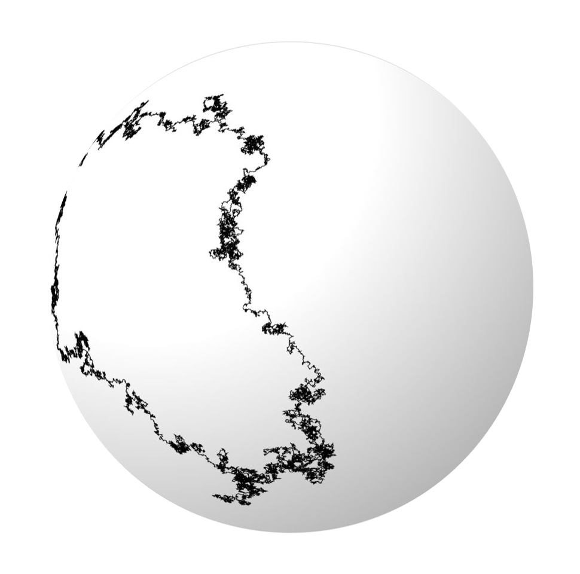

css/retro.css. Link that file
(or main.css / blog.css, which import it), then copy the markup shown
under each example. .cl-* classes are classifieds-style layouts (link boxes, listings),
.wp-* classes are encyclopedia-style layouts (infoboxes, notices, references).
Every color and font is a variable at the top of retro.css.
Contents
| --font-sans | Helvetica / Arial. Body text, lists, and navigation. |
| --font-serif | New Century Schoolbook. Every heading and box title. |
| --font-mono | courier. Email addresses and small details. |
| --size-base (15px) | Article body text |
| --size-body (14px) | Lists, descriptions, buttons |
| --size-small (12px) | Navigation, dates, meta, footers |
| --size-tiny (11px) | Calendar cells, pills, labels |
mathematics · computational physics
Motivating the property of spin as it relates to quantum mechanics.
A couple of undergraduate friends and I sent up a weather balloon.
field: computational physics
status: unpublished
Body text of the posting goes here, in plain paragraphs.
posted: 2025-11-28 reply
Blog posts already get the article layout from css/blog.css; the boxes below can be dropped into any post.
For a standalone page, wrap content in .wp-page.
This article is about the quantum property. For the rotation group, see SO(3).
Spin is an intrinsic form of angular momentum carried by elementary particles.[1]
Section text.
In a mathematical sense this is all applied group theory.
 | |
| Scientific career | |
|---|---|
| Fields | Computational physics, Mathematics |
| Institutions | Kent State University Brookhaven National Laboratory |
| Website | chasekosborne.github.io |
The infobox floats right; text wraps around it on the left, like the lead section of a biography.
Use .wp-thumb alone for a full-width figure between rules, or add right / left for a small floated box.
| Particle | Spin | Statistics |
|---|---|---|
| Electron | 1/2 | Fermion |
| Photon | 1 | Boson |
| Higgs | 0 | Boson |
| Blog posts | |
|---|---|
| Topics | What is Spin?Beating NimGreen's Functions |
| Projects | Kent State Space Mission |
| Writing | Thoughts on AI |